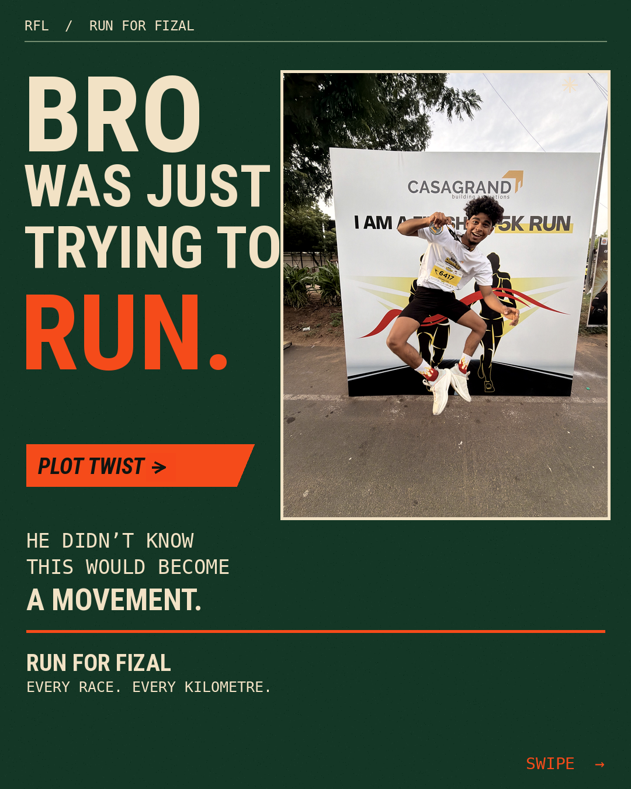

From content ideas
to campaigns people connect with.
A look at social media work across content planning, visual storytelling, campaign execution and creative production.
Work presented in this archive documents genuine, hands-on social media content creation, visual storytelling, and campaign creative execution for real-world community initiatives. In accordance with portfolio ethics, no paid commercial retainers or inflated follower growth metrics are claimed.

Run for Fizal “Every race. Every kilometre. For Fizal.”
When avid runner and medal collector Fizal was sidelined by a severe knee injury (medial meniscus tear & parameniscal cyst), his running crew turned friendship into a movement. They created the custom RFZ 031026 race bib, wearing his name across competitive marathons and daily training routes until he returns to the start line.
Extensible Management Framework
This overview is structured to accommodate additional genuinely managed brand accounts, creator platforms, and community initiatives as their campaigns complete documentation. No speculative accounts or unverified relationships are added prematurely.